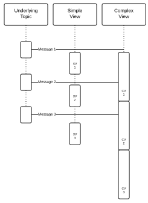

3. Publish and Subscribe¶
AMPS is a rich message delivery system. At the core of the system, the AMPS engine is highly-optimized for publish and subscribe delivery. In this style of messaging, publishers send messages to a message broker (such as AMPS) which then routes and delivers messages to the subscribers. “Pub/Sub” systems, as they are often called, are a key part of most enterprise message buses, where publishers broadcast messages without necessarily knowing all of the subscribers that will receive them. This decoupling of the publishers from the subscribers allows maximum flexibility when adding new data sources or consumers.

Figure 3.1: Publish and Subscribe
AMPS can route messages from publishers to subscribers using a topic
identifier and/or content within the message’s payload. For example, in
Figure 3.1,
there is a Publisher sending AMPS a message pertaining to the LN_ORDERS topic. The
message being sent contains information on Ticker “IBM” with a Price of 125, both of these
properties are contained within the message payload itself (i.e., the
message content). AMPS routes the message to Subscriber 1 because it is
subscribing to all messages on the LN_ORDERS topic. Similarly, AMPS
routes the message to Subscriber 2 because it is subscribed to any
messages having the Ticker equal to “IBM”. Subscriber 3 is looking for a
different Ticker value and is not sent the message.
Topics¶
A topic is a string that is used to declare a subject of interest for purposes of routing messages between publishers and subscribers. Topic-based Publish and-Subscribe (e.g., Pub/Sub) is the simplest form of Pub/Sub filtering. All messages are published with a topic designation to the AMPS engine, and subscribers will receive messages for topics to which they have subscribed.

Figure 3.2: Topic Based Pub/Sub
For example, in Figure 3.2, there are two publishers: Publisher
1 and Publisher 2 which publish to the topics LN_ORDERS and
NY_ORDERS, respectively. Messages published to AMPS are filtered and
routed to the subscribers of a respective topic. For example, Subscriber
1, which is subscribed to all messages for the LN_ORDERS topic will
receive everything published by Publisher 1. Subscriber 2, which is
subscribed to the regular expression topic ".*_ORDERS" will receive
all orders published by Publisher 1 and 2.
Regular expression matching makes it easy to create topic paths in AMPS.
Some messaging systems require a specific delimiter for paths. AMPS
allows you the flexibility to use any delimiter. However, 60East
recommends using characters that do not have significance in regular
expressions, such as forward slashes. For example, rather than using
northamerica.orders as a path, use northamerica/orders.
AMPS does not restrict the characters that can be present in a topic
name. However, notice that topic names that contain regular expression
characters (such as . or *) will be interpreted as regular
expressions by default, which may cause unexpected behavior.
Topics that begin with /AMPS are reserved. The AMPS server publishes
messages to topics that begin with /AMPS as described in
Chapter 20 Event topics. Some versions of the AMPS client libraries
may internally publish to /AMPS/devnull. Your applications should
not publish to topics that begin with /AMPS, and publishes to those
topics may fail.
Regular Expressions¶
With AMPS, a subscriber can use a regular expression to simultaneously subscribe to multiple topics that match the given pattern. This feature can be used to effectively subscribe to topics without knowing the topic names in advance. Note that the messages themselves have no notion of a topic pattern. The topic for a given message is unambiguously specified using a literal string. From the publisher’s point of view, it is publishing a message to a topic; it is never publishing to a topic pattern.
Subscription topics are interpreted as regular expressions if they include special regular expression characters. Otherwise, they must be an exact match. Some examples of regular expressions within topics are included in Table 3.1.
| Topic | Behavior |
|---|---|
^trade$ |
matches only “trade”. |
^client.* |
matches “client”, “clients”, “client001”, etc. |
.*trade.* |
matches “NYSEtrades”, “ICEtrade”, etc. |
Table 3.1: Topic Regular Expression Examples
For more information regarding the regular expression syntax supported within AMPS, please see the Regular Expression chapter in the AMPS User Guide.
AMPS can be configured to disallow regular expression topic matching for subscriptions. See the AMPS Configuration Guide for details.
Filtering Subscriptions By Content¶
One thing that differentiates AMPS from classic messaging systems is its ability to route messages based on message content. Instead of a publisher declaring metadata describing the message for downstream consumers, the publisher can simply publish the message content to AMPS and let AMPS examine the native message content to determine how best to deliver the message.
The ability to use content filters greatly reduces the problem of oversubscription that occurs when topics are the only facility for subscribing to message content. The topic space can be kept simple and content filters used to deliver only the desired messages. The topic space can reflect broad categories of messages and does not have to be polluted with metadata that is usually found in the content of the message. In addition, many of the advanced features of AMPS such as out-of-focus messaging, aggregation, views, and SOW topics rely on the ability to filter content.
Content-based messaging is somewhat analogous to database queries that
include a WHERE clause. Topics can be considered tables into which
rows are inserted (or updated). A subscription is similar to issuing a
SELECT from the topic table with a WHERE clause to limit the
rows which are returned. Topic-based messaging is analogous to a
SELECT on a table with no limiting WHERE clause.
AMPS uses a combination of XPath-based identifiers and SQL-92 operators for content filtering. Some examples are shown below:
Example Filter for a JSON message:¶
(/Order/Instrument/Symbol == 'IBM') AND
(/Order/Px >= 90.00 AND /Order/Px < 91.00)
Example Filter for an XML Message:¶
(/FIXML/Order/Instrmt/@Sym == 'IBM') AND
(/FIXML/Order/@Px >= 90.00 AND /FIXML/Order/@Px < 91.0)
Example Filter for a FIX Message:¶
/35 < 10 AND /34 == /9
For more information about how content is handled within AMPS and the syntax of AMPS filters, check out AMPS Expressions.
 |
Unlike some other messaging systems, AMPS lets you use a relatively small set of topics to categorize messages at a high level and use content filters to retrieve specific data published to those topics. Examples of good, broad topic choices:
This approach makes it easier to administer AMPS, easier for publishers to decide which topics to publish to, and easier for subscribers to be sure that they’ve subscribed to all relevant topics. |
Conflated Subscriptions¶
AMPS provides the ability for the server to conflate messages to a subscription. When a subscription requests conflation, the server will retain messages for that subscription for a certain period of time, the conflation interval, and provide the latest update to that message once a message has been retained for that interval. Conflated subscriptions provide a way to reduce the bandwidth and processing for a subscriber in cases where a subscriber needs periodic updates with the current state of a message, rather than the complete message stream. AMPS provides per-subscription conflation for cases where only a small number of subscribers require conflation, or if conflation is required only in unusual cases. If multiple subscribers will have the same conflation needs, consider using Conflated Topics.
For example, imagine an application that monitors selected stocks and
displays the current prices on a large screen, which refreshes every few
seconds. This application may use the same topics as a trading desk, but
has very different needs for data freshness and completeness. Since
updates to each symbol will only be displayed every few seconds, the
application only needs point in time updates of the prices, rather than
the full stream of price changes. To meet this need, the application
could specify that the subscription conflates price updates by
tickerId with a conflation interval of two seconds. For each
distinct value of the tickerId field, AMPS will retain messages for
two seconds. If another message with the same tickerId is processed
for the subscription during the conflation interval, that message
completely replaces the previous message. At the end of the two second
conflation interval, the message is delivered to the application. This
lets the application receive an up-to-date price at most every two
seconds, without having to process a large number of updates that will
never be displayed. This approach also ensures that the price is never
more than two seconds out of date, which means that each time the screen
is refreshed, the price is current.
For example, if subscription uses tickerId for conflation and the
following sequence of messages arrive during a conflation interval:
{ "tickerId" : "IBM", "price" : 150.34 }
{ "tickerId" : "IBM", "price" : 149.76 }
{ "tickerId" : "IBM", "price" : 149.32 }
{ "tickerId" : "IBM", "price" : 151.10 }
AMPS delivers only the last message for that tickerId:
{ "tickerId" : "IBM", "price" : 151.10 }
Notice that when a subscription is conflated, AMPS does not guarantee that messages are delivered precisely in order in which they arrived at AMPS, since the latest update is delivered based on the conflation interval.
When the timestamp option is used with conflated subscriptions, AMPS
provides the timestamp for the first message conflated.
When to Use Conflated Subscriptions¶
Conflated subscriptions reduce the bandwidth for a subscription, and may reduce the processing resources required for a subscription. However, rather than immediately delivering messages, AMPS retains messages in memory for the conflation interval. This can increase the memory required for the subscription.
AMPS contains other features for conflating messages and reducing bandwidth. Conflated subscriptions are most appropriate when:
- Network bandwidth is at a premium, and you would like AMPS to spend slightly more processing time and potentially more memory to reduce the bandwidth needs of the application.
- Each subscription has different conflation needs. For example, if each subscription has a dramatically different conflation interval, or needs to conflate by different fields. If most subscribers will use a similar conflation interval and use the same fields for conflation, using a Conflated Topic can provide equivalent results with lower overhead.
- The conflation needs are relatively predictable and consistent for the subscription. If you need the application to conflate messages only when processing is slow or there are bursts of message traffic, client-side conflation provides that ability and may be a better choice than a conflated subscription. See the developer guide for your programming language of choice for details.
The considerations above are general guidance to help you consider options and choose a conflation strategy.
You can also combine approaches as necessary. For example, if most of
your subscriptions require a 3 second conflation interval by
tickerId, while a few subscriptions require a 15 second interval,
you could create a Conflated Topic with a 3 second interval. Those
subscriptions that require a 15 second interval could subscribe with
that interval. This provides both sets of subscriptions with the
intervals that they need.
Requesting Conflation on a Subscription¶
To request conflation on a subscription, set the following options on the subscription:
| Option | Description |
|---|---|
conflation=n |
Specifies whether to conflate this
subscription.The value provided can be a
time interval, When present and set to a value other than none, enables conflation for the subscription. Can also be set to Recognizes the same time specifiers used
in the AMPS configuration file (for
example, Defaults to |
conflation_key=[keys] |
When conflation is enabled, specifies the
fields to use to determine message
uniqueness. The format of this option is
a comma-delimited list of XPath
identifiers within brackets. For example,
to conflate based on the value of the
Defaults to the SOW key fields for SOW topics. No default for non-SOW topics. This option is required for non-SOW topics. This option is not valid with the |
Table 3.2: Conflated Subscription options
For example, to request a 10 second conflation interval with messages
conflated on the [/orderId] field, you would use the following
options string:
conflation=10s,conflation_key=[/orderId]
Replacing Subscriptions¶
AMPS provides the ability to perform atomic subscription replacement. This allows you to replace the filter, change the topic, or update the options for a subscription.
The most common use for this capability is for an application to change the filter for a subscription. For example, a GUI that is providing a view of a set of orders may need to add or remove an order from the set of orders being displayed. By replacing the content filter with a filter that tracks the updated set of orders, the application can do this without missing messages, getting duplicate messages, or having to manage more than one subscription.
Replacing a filter is an atomic operation. That is, the application is guaranteed not to miss messages that are in both the original and replacement subscription, and is guaranteed to receive all messages for the new subscription as of the point at which the replacement happens.
When replacing a sow_and_subscribe command (described later in the
guide), AMPS runs the SOW command again and provides any messages that
were not previously in the result set to the application. See the section called
Replacing Subscriptions with SOW and Subscribe
for details.
Notice that some options on an initial subscription limit the support
for replace on a subscription. In those cases, the limitiation is
described when the option is described.
Replacing the Content Filter on a Subscription¶
AMPS allows you to replace the content filter on an existing subscription. When this happens, AMPS begins sending messages on the subscription that match the new filter. When an application needs to bring more messages into scope, this can be more efficient than creating another subscription.
For example, an application might start off with a filter such as the following
/region = 'WesternUS'
The application might then need to bring other regions into scope, for example:
/region IN ('WesternUS', 'Alaska', 'Hawaii')
Replacing the Topic on a Subscription¶
AMPS allows a subscription to replace the topic on a subscription. When
the topic is replaced, AMPS re-evaluates the subscription as it does
when a filter is replaced. If the subscription is updated to include a
topic that the user does not have permission to subscribe to, the
replace operation succeeds, but no messages will be delivered on
that topic.
Replacing the Options on a Subscription¶
AMPS allows a subscription to replace some of the options on the
subscription. In this case, the subscription is evaluated as though the
topic or filter has been replaced. Any new messages generated after the
point of the subscription being replaced use the new options. However,
AMPS does not replay or requery previous messages to apply the options.
For example, if a sow_and_subscribe command did not previously
specify Out-of-Focus tracking and adds this option, AMPS generates the
appropriate Out-of-Focus messages from the replace point forward. AMPS
does not recreate Out-of-Focus messages that would have previously been
generated by the subscription.
If the subscription uses pagination (see Configuring SOW Query Result Sets), the replacement must contain the full set of pagination options provided on the original subscription.
Messages in AMPS¶
Communication between applications and the AMPS server uses AMPS
messages. AMPS Messages are received or sent for every operation in
AMPS. Each AMPS message has a specific type, and consists of a set of
headers and a payload. The headers are defined by AMPS and formatted
according to the protocol specified for the connection. Typically,
applications use the standard amps protocol which uses a JSON
document for headers. The payload, if one is present, is the content of
the message, and is in the format specified by the message type.
Messages received from AMPS have the same format as messages to AMPS.
These messages also have a specific type, with a header formatted
according to the protocol and a payload of the specified message type.
For example, AMPS uses ack messages, short for acknowledgment, to
report the status of commands. AMPS uses publish messages to deliver
messages on a subscription, and so on for other commands and other
messages.
For example, when a client subscribes to a topic in AMPS, the client
sends a subscribe message to AMPS that contains the information
about the requested subscription and, by default, a request for an
acknowledgment that the subscription has been processed. AMPS returns
an ack message when the subscription is processed that indicates
whether the subscription succeeded or failed, and then begins providing
publish messages for new messages on the subscription.
Messages to and from AMPS are described in more detail in the AMPS Command Reference, available on the 60East website and included in the AMPS client SDKs.
In this version of AMPS, the communication transports used by AMPS accept message sizes of up to 200MB in a single command to AMPS. Messages larger than 200MB may be rejected by the transport as invalid. Should your use of AMPS require larger message sizes, contact 60East support.
|
This version of AMPS limits messages to 200MB in total size. |
Introduction to AMPS Headers¶
The AMPS Command Reference contains a full list of headers for each command. The table below lists some commonly-used headers.
| Header | Description |
|---|---|
| Topic | The topic that the message applies to. For commands to AMPS, this is the topic that AMPS will apply the command to. For messages from AMPS, this is the topic from which the message originated. |
| Command | The command type of message. Each
message has a specific command type.
For example, messages that contain
data from a query over a SOW topic
have a command of sow, while
messages that contain data from a
publish command have a command of
publish, and messages that
acknowledge a command to AMPS have a
command type of ack. |
| CommandId | An identifier used to correlate
responses from AMPS with an initial
command. For example, ack
messages returned by AMPS contain
the CommandId provided with the
command they acknowledge, and
subscriptions can be updated or
removed using the CommandId provided
with the subscribe command. |
| SowKey | For messages received from a State
of the World (or SOW) topic, an
identifier that AMPS assigns to the
record for this message. SOW topics
are described in
Chapter 6.
This header is included on messages
from a SOW topic by default. AMPS
will omit this header when the
subscription or SOW query includes
the no_sowkey option. |
| CorrelationId | A user-specified identifier for the message. Publishers can set this identifier on messages. AMPS does not parse, change, or interpret this identifier in any way. This header is limited to characters used in Base64 encoding. |
| Status | Set on ack messages to indicate
the results of the command, such as
Success or Failure. |
| Reason | Set on ack messages to indicate
the reason for the Status
acknowledgment. |
| Timestamp | Optionally set on publish
messages and sow messages to
indicate the time at which AMPS
processed the message. To receive a
timestamp, the SOW query or
subscription must include the
timestamp option on the command
that creates the subscription or
runs the query. The timestamp is
returned in ISO-8601 format. |
Table 3.3: Basic AMPS Headers
This section presents a few of the commonly-used headers. See the AMPS Command Reference for a full description of AMPS messages.
AMPS does not provide the ability to add custom header fields. However, AMPS composite message types provide an easy way to add an additional section to a message type that contains metadata for the message. Because composite message type parts fully support AMPS content filtering, this approach provides more flexibility and allows for more sophisticated metadata than simply adding a header field. See Chapter 15 Composite Messages for details.
Retrieving Part of a Message with A Select List¶
AMPS has the ability to allow a subscriber to retrieve only the relevant parts of a message, in the same way that a SQL query can retrieve only specified fields from a table. For example, consider a topic that stores an event id, a short description, and a detailed event record. A UI that presents an overview of the contents of the topic might only need the event id and short description to present a high-level view of the topic contents, while retrieving the detailed event record when a user explicitly requests the details for a specific record.
With select lists, AMPS allows an individual subscription to control
which fields are retrieved from a subscription or query. In the example
above, the subscription would include a select list that requests that
AMPS provide the event id and description, while excluding any other field.
To do this, the application would include the following option on the
command used to retrieve data for the overview:
select=[-/,+/event_id,+/description]
Creating Select Lists¶
As mentioned above, to provide a select list on a command,
add the keyword select and a comma-delimited list of field directives
to the options for a subscription or query in AMPS.
Each field directive is a combination of an inclusion specifier and an AMPS identifier.
For example, the field directive +/event_id has an inclusion_specifier
of + and the AMPS identifier of /event_id. This field directive
specifies that the /event_id field is included in the message returned
to the subscriber.
AMPS recognizes the following inclusion specifier values:
| specifier | meaning |
+ |
explicitly include the field for the identifier immediately following |
- |
explicitly exclude the field for the identifier immediately following |
Identifiers for individual fields follow the syntax described in Identifiers.
For select lists, AMPS also recognizes the special field directive of -/ to specify that all fields should
be excluded and the special field directive of +/ to mean specify that all fields should be included.
If no field directive in the select list applies to a given field in a message, that field is included in the message.
If a field is covered by multiple field directives, AMPS respects the most specific field directive. In
other words, a select list that contains the field directives +/,-/details will include all fields except the
details field. A select list that contains the field directives -/event,+/event/description will include the
/event/description subfield, but no other contents of the /event field. (If an identifier is provided
twice in the same select list, AMPS uses the first field specifier that contains the identifier.)
With select lists, AMPS does not create fields that are not in the original message. This means that if the select list requests a field that does not exist in the original message, the message delivered to the subscriber will not contain that field.
Notice that a select list only changes how a message is delivered to the subscriber that the select list applies to. The original message is unaffected, and the the complete message is delivered to any subscriber that does not specify a select list.
AMPS contains related functionality that may be more appropriate for some applications:
- To modify a message as it is published to AMPS, use Enrichment and Preprocessing. With those features, the original publish message is modified and the modified message is stored in AMPS and sent to all subscribers.
- AMPS also offers the ability to create a view of a set of messages that aggregates data across a set of messages and produces a result (for example, the total value of all open orders for each customer). See the chapter on Aggregating and Analyzing Data in AMPS for more details.
Select List Examples¶
For example, consider an original message like the following JSON document
{ "id": 42,
"name":"Arthur",
"day":"Thursday",
"complaint":"Unannounced construction in neighborhood.",
"pocket_contents":
{ "left":"twine",
"right":"towel" }
}
An application might only need to see the id and complaint description.
To retrieve just those fields of a message, the application could add the
following option to the command that retrieves the message:
select=[-/,+/id,+/complaint]
This select list tells AMPS to remove all fields from the message except for
the /id field and the /complaint field. With this select list,
the message above will be delivered as:
{ "id": 42,
"complaint":"Unnanounced construction in neighborhood."
}
Likewise, an application could want to know the name of the person making the complaint and the contents of that person’s left pocket:
select=[-/,+/name,+/pocket_contents/left]
For the original message, the result of providing this select list would be:
{ "name": "Arthur",
"pocket_contents":
{ "left":"twine"}
}
Last, consider an application that wants to see everything in the message
except the pocket_contents. That application could provide an option
such as:
select=[-/pocket_contents]
With that specifier, AMPS provides any field in the message except the
pocket_contents, producing the following result:
{ "id": 42,
"name":"Arthur",
"day":"Thursday",
"complaint":"Unannounced construction in neighborhood."
}
Message Ordering¶
AMPS guarantees that, for each AMPS instance, all subscribers to a topic receive messages in the order in which AMPS received the messages (with the exception of messages that have been returned to a message queue for redelivery). Before a given message is delivered to a subscriber, all previous messages for that topic are delivered to the subscriber. AMPS does this by enforcing a total order across the instance for all messages received from publishers, including messages received via replication. When AMPS is using a transaction log, that order is preserved in the transaction log for the instance, and persists across instance restarts.
This guarantee also applies across topics for subscriptions that involve
multiple topics, for all topics except views, queues, and conflated
topics. Views and queues guarantee that every message on the view or the
queue appears in the order in which the message was published. However,
the computation involved in producing messages for views and queues may
introduce some amount of processing latency, and AMPS does not delay
messages on other topics while performing these computations. For a
queue that provides at-least-once delivery, if a processor fails and
returns a message to the queue, that message will be redelivered (which
means that the new processor may receive the message out of order).
Likewise, when AMPS is providing conflation (either through a conflated
topic or the conflation options on a subscription), AMPS does not
provide ordering guarantees for conflated messages.
Applications often use this guarantee to publish checkpoint messages,
indicating some external state of the system, to a checkpoint topic. For
example, you might publish messages marking the beginning of a business
day to a checkpoint topic, MARKERS, while the ORDERS topic
records the orders during that day. Subscribers to the regular
expression ^(ORDERS|MARKERS)$ are guaranteed to receive the message
that marks the business day before any of the messages published to the
ORDERS topic for that day, since AMPS preserves the original order of
the messages.
For messages constructed by AMPS, such as the output of a view, AMPS processes messages for each topic in the order in which they arrive (unless conflation is requested), and delivers each calculated message to subscribers as soon as the calculation is finished and a message is produced. This keeps the latency low for each individual topic. However, this means that while AMPS guarantees the order in which messages are produced within each view, messages produced for views that do simple operations will generally take less time to be produced than messages for views that perform complex calculations or require more complicated serialization. This means that AMPS guarantees ordering within view topics, but does not guarantee that messages for separate view topics arrive in a particular order.
The figure below shows a possible ordering for messages received on an underlying topic and two views that use the topic:
Notice that within each topic, AMPS enforces an absolute order. However, the Simple View produces the results of Message 3 before the Complex View produces the results of Message 2.
Replicated Message Ordering¶
When providing messages received via replication (see Chapter 24), the principles on message ordering provided above still apply. AMPS records messages into the local transaction log in the order in which messages are received by the instance, and provides messages to subscribers in that order. AMPS uses the sequence of publishes assigned by the original publisher and the order assigned by the upstream instance to ensure that all replicated messages are received and recorded in order with no gaps or duplicates. AMPS does not enforce a global total ordering across a replication topology. This peer-to-peer approach means that an AMPS instance can continue accepting messages from publishers and providing messages to subscribers even when the remote side of a replication link is offline or if replication is delayed due to network congestion. However, if two messages are published to different instances at the same time by different publishers, the two instances may record a different overall message order for those messages, even though message order from each publisher is preserved.